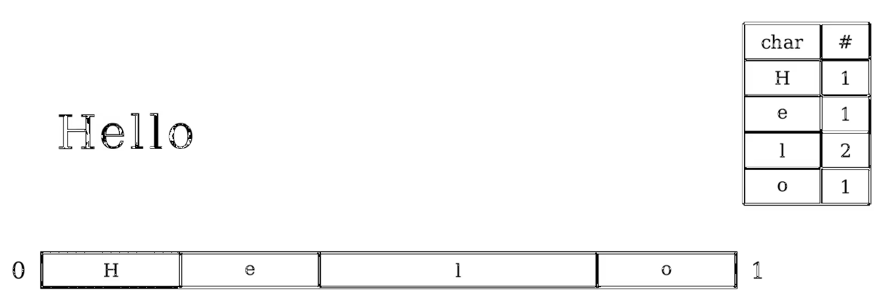
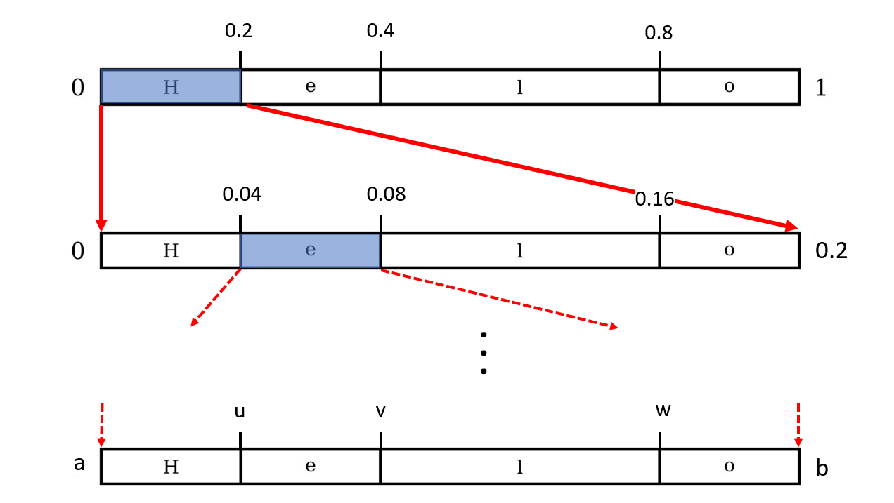
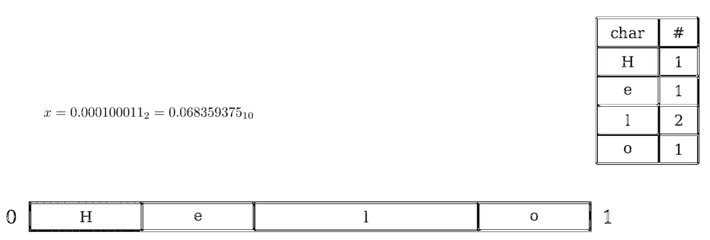
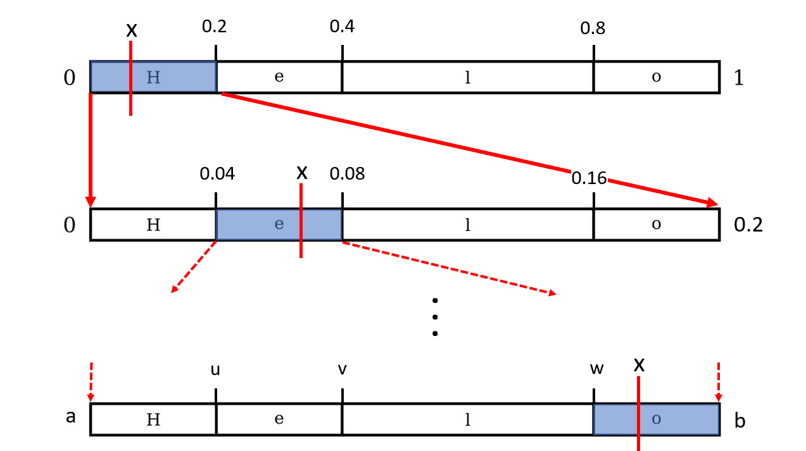
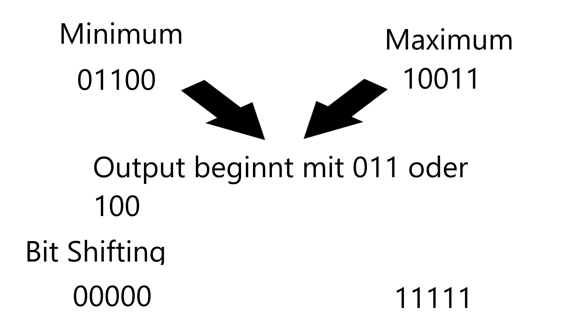

Inhaltsverzeichnis
Thema
Arithmetisches Kodieren ist eine Form der Entropiekodierung. Im Gegensatz zu anderen Entropiekodierungen wie z.B. der Huffman-Kodierung, wo zunächst ein Baum erstellt wird, um anschließend für jedes Zeichen eine individuelle Kodierung zu berechnen, wird beim Arithmetischen Kodieren eine lange binäre Fließkommazahl ausgegeben, welche die komplette Eingabe kodiert. Es findet also keine Kodierung kleinerer Komponente statt, sondern es wird Zeichen für Zeichen kodiert. Hierdurch werden Kompressionsraten erreicht, welche sehr nahe am theoretischen Limit der Entropie liegen.Theoretische Grundlagen
Das Verfahren stützt sich wie auch viele andere Kompressionsverfahren auf die Stochastik. So wird zu Beginn die Häufigkeit und die entsprechende Wahrscheinlichkeit für jedes Zeichen einer Eingabe berechnet. Das Verständnis von Binary-Search wird vorausgesetzt und nicht genauer erklärt, da dies auch keine Charakteristik des Kompressionsverfahrens beschreibt, sondern nur zur Berechnung einer binären Zahl innerhalb eines Intervalles dient (siehe Kodierung).Kodierung
Zunächst wird für die Eingabe die Häufigkeit aller vorkommenden Zeichen berechnet. Anschließend wird das Interval [0,1] entsprechend dieser Häufigkeiten aufgeteilt. Dies wird gemacht, da am Ende beim Arithmetischen Kodieren die Eingabe als eine beliebig lange Fließkommazahl kodiert wird. Legen wir nun das Intervall [0,1] fest, so wird der später kodierte String irgendwo zwischen 0 und 1 liegen. So könnte z.B für die Eingabe "Hello" folgende Startbedingung erstellt werden.
Nun wird das erste Zeichen eingelesen. Dessen Intervall wird nun das komplette Intervall ersetzen. Die Verhältnisse der Intervalle untereinander ändert sich nicht. Es werden lediglich die Grenzen aktualisiert. Anschließend wird das nächste Zeichen eingelesen und die Intervallgrenzen entsprechend aktualisiert. Hat man dies nun für alle Zeichen der Eingabe durchgeführt, so liegt einem ein Intervall [a,b] vor.

Alle Zahlen innerhalb dieses Intervalls sind korrekte Kodierungen für unsere Eingabe. Es gibt somit theoretisch unendlich viele Kodierungen für eine Eingabe x, nämlich alle Zahlen im Intervall [a,b]. Da man bei einer Kodierung eine Eingabe aber natürlich mit möglichst wenig Bits kodieren möchte, wird die kürzeste Binärzahl genommen, welche im Intervall [a,b] liegt. Dies kann z.B. durch einen Binary-Search Algorithmus erreicht werden. So wäre 0.11001 eine mögliche Kodierung für das Interval [0.78, 0.8].
Problematik - Finite Precision Arithmetic Coding
Normalerweise werden Zahlen mit 32 oder 64 Bit precision gespeichert. Das wird für uns ein Problem, da die Intervallgrenzen sich immer stärker annähern. Dies führt unvermeidlich zu einem Intervall, in welchem beide Grenzen den gleichen Wert annehmen [a,a] und fortan falsch Kodieren würde. Es existieren mehrere Möglichkeiten, um diese Problematik mehr oder weniger effektiv zu umgehen. Oft wird direkt nach einem kodierten Zeichen geschaut, ob die Zahl im Intervall [0, 0.5] oder [0.5, 1] liegt und das jeweilige Intervall anschließend normalisiert, sodass Rechnungen mit hoher Präzision nie auftreten.Dekodierung
Hier wird als Eingabe ein kodierte Binärzahl x erwartet. Diese wird anschließend in eine Dezimalzahl umgerechnet. Ebenso wird eine Häufigkeitsverteilung aller Zeichen als Eingabe erwartet. Aus dieser wird analog zu Kodierung das Intervall [0,1] im Hinblick auf die Zeichen aufgeteilt. Eine Startbedingung könnte folgendermaßen aussehen:
Durch die Häufigkeitsangaben wissen wir, dass die Dekodierung aus genau 5 Zeichen besteht. Im ersten Schritt wird die Dezimalzahl x auf dem Intervall gesucht. Das kodierte Zeichen entspricht nun dem Intervall in welchem sich x befindet also "H". Anschließend werden die Intervallgrenzen analog zu Kodierung aktualisiert und x erneut auf dem Intervall [0, 0.2] gesucht.

Haben wir dies 5 mal durchgeführt erhalten wird unseren dekodierten String "Hello".
Lösung: Begrenzte Genauigkeit
Um das Problem der begrenzten Genauigkeit im Computer zu lösen müssen wir mehrere Tricks anwenden. Als Erstes wird die Eingabe nicht als Dezimahlzahlen zwischen 0 und 1 encodiert sondern als Binärzahl zwischen 0.000000... und 0.111111... die unter und obergrenzen sind also nun einenlich lange Binärzahlen und wir geben eine endliche Zahl zwischen den beiden Intervallgrenzen am Ende des Verfahrens aus.Der Vorteil hiervon ist, dass wir nun immer nur z.Bsp. 32bit dieser unendlich langen Intervallgrenzen betrachten. Wenn diese nun konvergieren, also die Unter- und Obergrenzen des Intervalls sich so stark aneinander annähern, dass sie mit dem selben Bit beginnen, können wir das erste Bit ausgeben und die Untergrenze mit einer 0 und die Obergrenze mit einer 1 auffüllen.

Mit anderen Worten: jede Zahl zwischen 00000 und 01111 beginnt mit 0, weshalb dieses Bit sich im Verlaufe der weiteren Rechnungennicht verändern wird.
Wenn nun die Zahlen nicht ganz zum konvergieren kommen, aber es nur zwei Möglichkeiten gibt, wie sie konvergieren, kann man die zweiten Bits der Intervallgrenzen entfernen und eine Zählervariable für die Ausgabe des nächsten Bits erhöhen. Wenn nun die grenzen konvergieren, gibt man nicht nur wie oben den Anfangsbit aus sondern ergänzt diesen der Zählervariable entsprechend mit Nullen bzw. Einsen.

Statt mit 01100 und 10011 zu rechnen, kann der Computer auch mit 00000 und 11111 rechnen. Sobald er diese Grenzen nun zu 0XXXX oder 1XXXX konvergieren gibt der Algorithmus entsprechend 011 oder 100 aus. Denn jede Zahl zwischen 01100 und 10011 beginnt entweder mit 011 oder mit 100.
Anwendungsgebiet
Implementierungen der Arithmetischen Kodierung können in der Text und Bildkompression genutzt werden. In Bildkompressionsoftware wird nur teilweise die Arithmetischen Kodierung als Entropie Kodierung genutzt. Aufgrund einer unklaren Patent Situation um die 1980er Jahre, wurde die Huffman-Kodierung oft bevorzugt. JPEG zum Beispiel bietet jedoch beide Entropie-Kodierungen an, wobei eine Konvertierung von Huffman- zu Arithmetischer-Kodierung eine weitere Reduktion von bis zu 25% erreichen kann.Qualitätsbewertung über das Verfahren
Die Arithmetische Kodierung kommt mit einer genauen Wahrscheinlichkeitstabelle des genutzten Alphabets nahe an das theoretische Limit der Datenkompression: der Entropie der Nachricht. Dabei kann es bessere Ergebnisse als die Huffman-Codierung erreichen, weist dafür jedoch auch einen höheren Rechenaufwand auf, da der Algorithmus komplizierter ist. Die Asymmetric Numeral Systems (ANS) kombinieren die nahe an der Entropie liegende Kompressionsrate dieses Verfahrens mit einer, der Huffman-Codierung vergleichbaren, Ausführungszeit. Die Arithmetische Kodierung liefert also sehr gute Ergebnisse, aber benötigt dafür auch viele Rechenoperationen. Texte mit Millionen Zeichen können in Bruchteilen einer Sekunde komprimiert werden, aber wenn man große Mengen Bilder komprimieren will, kann man noch etwas mehr (zeitliche) Effizienz mit anderen Verfahren herausholen. Ein Problem, an dem diese Art von Dekodierverfahren nicht vorbei kommt, ist die Enkodierung von komplexeren Redundanzen. Wir erhalten zwar eine effizientere Darstellung unserer Eingabe, aber am Ende ist in der encodierten Datei jeder Buchstabe "einzeln" enthalten. Dies bedeutet, dass wenn einzelne Wörter, Sätze oder ganze Seiten an identischen Texten in der Eingabe enthalten sind, diese nicht annähernd effizient encodiert werden. Ein 200.000 Zeichen langes Buch kann unsere recht simple Implementierung - von einer UTF-8 Codierung ausgehend - bereits um 39% verkleinern (getestet mit Goethes Faust). Doch wenn wir nun als Eingabe nun einfach den identischen Text erneut Anhängen und nun 400.000 Zeichen haben, dann verdoppelt sich auch unsere Ausgabegröße und wir erreichen nur 39% Verkleinerung. Obwohl die Hälfte der Eingabe redundant ist, selbst wenn wir nur 1 Millionen mal das Wort 'Test' encodieren, kann dies der Algorithmus nicht erkennen, aber wir als Menschen sehen direkt, dass je nach Eingabe weit über 99% des Inputs irrelevant ist und noch weiter verkleinert werden kann.\\ Davon ausgehend, dass die Eingabe jedoch sinnvoll ist und wenige Dopplungen enthält, bietet die Arithmetische Kodierung ein solides und sehr gutes En- und Dekodierverfahren.Referenzen
[1] Mark Nelson. (2014, October 19). Data compression with arithmetic coding. Mark Nelson. Retrieved January 12, 2023, fromhttps://marknelson.us/posts/2014/10/19/data-compression-with-arithmetic-coding.html
[2] Arithmetic coding. The Hitchhiker’s Guide to Compression. (n.d.). Retrieved January 15, 2023, from
https://go-compression.github.io/algorithms/arithmetic/
[3] Wikimedia Foundation. (2022, November 6). Arithmetisches Kodieren. Wikipedia. Retrieved January 12, 2023, from
https://de.wikipedia.org/wiki/Arithmetisches_Kodieren
[4] Wikimedia Foundation. (2023, January 21). Arithmetic coding. Wikipedia. Retrieved January 23, 2023, from
https://en.wikipedia.org/wiki/Arithmetic_coding
[5] Wikimedia Foundation. (2022, August 9). Asymmetric Numeral Systems. Wikipedia. Retrieved January 23, 2023, from
https://de.wikipedia.org/wiki/Asymmetric_Numeral_Systems